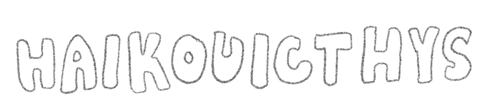
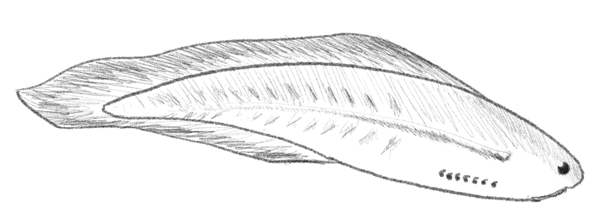
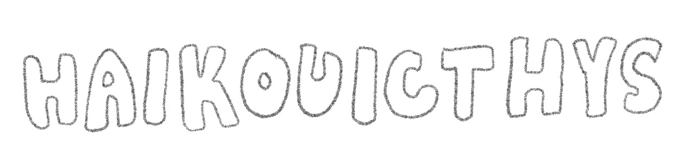
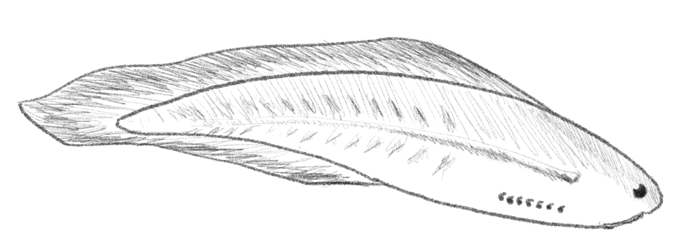

Haikouicthys was one of the earliest fish and therefore vertebrates discovered, having existed in the Cambrian period. Prior to discovering Haikouicthys, the first fish were believed to have evolved 50 million years later. Its anatomy was very simplistic.